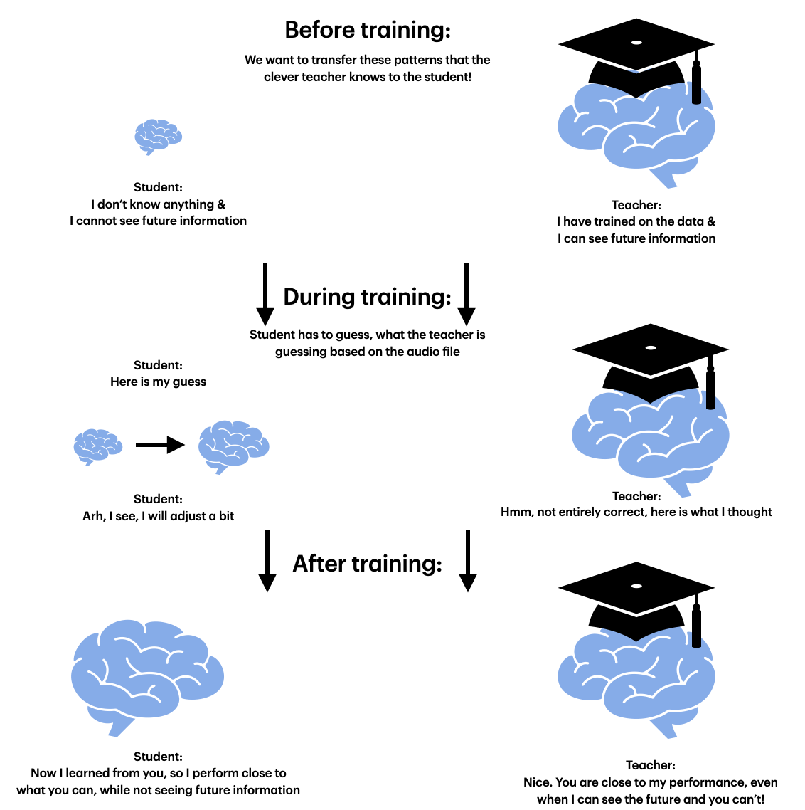
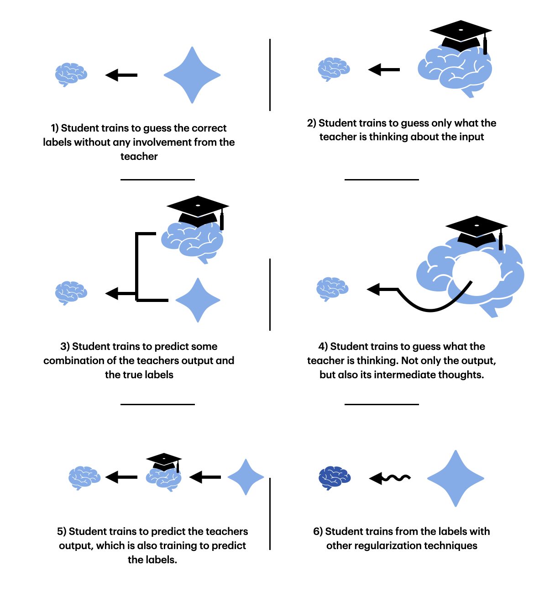
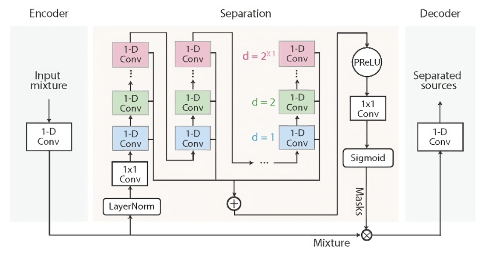
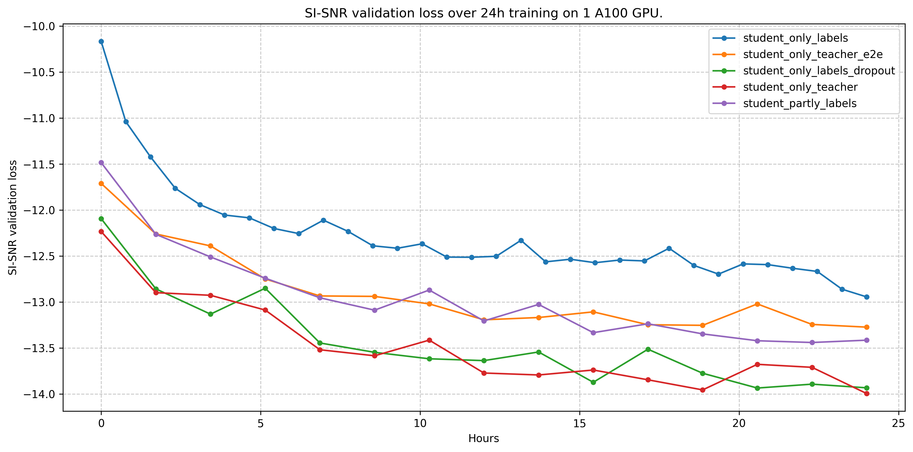
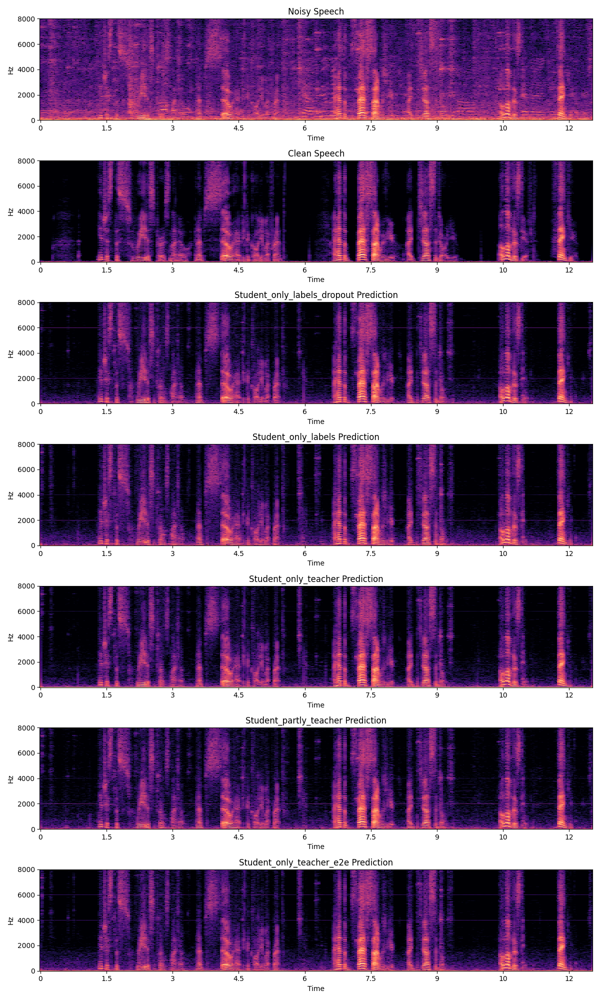

Dec. 29 - 2024
Crystal Clear Calls
Investigating how to perfect noise removal from speech in noisy environments.
Software | Paper
All the procedures descripted in this post can be reproduced by using the code in the github repo above. If you prefer to read in a more formal research-paper style, see above.
If you send a voice text to a friend on a messaging app of you speaking to them in the middle of a busy New York intersection, the audio will most likely get processed and filtered to exclude vehicle noise, other people talking, etc. In this setting, the audio clip is processed after the person is done talking. This is called non-causal filtering.
So, when filtering out the noise, we can look into the future. Processing the sound at time t_k, we take in all information:
[t_0, t_1, ..., t_k, t_k+1, ..., t_n-1, t_n]where n is the length of the clip. Another method is to take in some fixed number of datapoints from the past and future:
[t_k-w, ..., t_k, t_k+1, ..., t_k+w]But we have a problem! Let's take the same scenario, but this time you call your friend instead. We can no longer use future information, as the processing has to be done real time to have any meaningful impact. So we have to find another approach. This exact problem is also present in hearing aids. If we can no longer see future information, how do we filter out the noise? That is exactly I'm going to investigate here.
The idea:
How do we train a causal (no future information) model most effectively to have great performance? One idea is to use knowledge distilation: We take a non-causal, well-trained model, which will act as the teacher, and we use this to train a causal model (student). This is a classical teacher-student framework, a technique used when training mostly smaller models but wanting close to the same performance as the teacher provide.
In our scenario, the student will not be smaller, but rather have a different input. The idea is that the teacher will have figured out some way of performing well that the student can learn from by comparing the output from each layer with each other. Another idea is that the teacher serves as a regularization technique that gives more "soft" labels to the student, which makes it more robust and better performing on unseen data.
There are multiple different ways to do the teacher-student training, which I will explain later, but the above figure hopefully displays the central idea. We train the student to guess what the teacher will say, because the idea is that the teacher knows more than the student could from the labels by itself, and thereby the student gets an advantage by trying to predict what the teacher is thinking. Let's figure out if this hypothesis is true...
Training the teacher:
To start with, we will train the non-causal teacher. We will use a common model in the audio-filtering ML space called ConvTasNet. This model has proved itself worthy by showing strong performance on many noise-sepation datasets.
We use the EARS-WHAM dataset to train our models. This dataset is designed for speech processing research. The data is diverse in both the speakers and the noise making it well-suited for this task, while being big and diverse enough to give realistic results. To make the training faster, we resample the data to 16 kHz.
We train the teacher model for 48 hours on a single A100 GPU. After ~29 hours the model began to stagnate. We use multiple tricks to make the teacher as powerful as possible. You can investigate our code to find those tricks. Generally we are not too scared of the model overfitting, as the model is fairly simple and small enough compared to the dataset and task at hand, so we can afford to train a bit over what one normally would. This results in 65 full epochs and a final validation score of 15.27 SI-SNR.
SI-SNR, Scale-invariant Signal-to-noise ratio, is a metric commonly used to describe, you guessed it, the signal to noise ratio in the output. The higher the value, the more speech you have when compared to noise in the audio clip. If you are above 0, you have more speech than noise. So we would expect the model to be quite a bit higher than 0. How high you might ask? Well, we don't really know. You need some kind of benchmark to know, what other models are capable of, and thereby get a realistic goal. Or you could, as we did, use this metric as the loss, and then qualitively investigate how the results perform.
Note that in our training, the SI-SNR loss is negated, meaning that -10 on loss plots is actually 10. This is because ML frameworks usually works with a loss that should be minimized, and here we follow that principle.
For reference the best performing models on the EARS-WHAM dataset get ~17 SI-SNR on the validation set. With our teacher model, we get 15.27 SI-SNR loss, which is competitive, especially when compared to other ConvTasNet or models of equal size and complexity. Now that we have trained the teacher, let's have a look at how we can fit our student model.
Different approaches to fitting a student:
There are many different ways to fit the student, and we have to investigate multiple to ensure we have enough results for a proper conclusion. This involves: 1) training a student only from the labels (so without a teacher), 2) training from only the teacher, 3) training from partly the teacher and partly the labels (some avg tensor with some weighting), 4) training from teacher but with an intermediate loss, 5) training the student and the teacher from initialization together (end-to-end) and 6) training a student with other forms of regularization (dropout, weight-decay, etc).
These approaches should help us answer the following questions: What is the best way to fit a student to the teacher, is it better than training longer on just the labels, and if not could other regularization techniques work better than the student-teaher framework. Before we dive into the method and results, let's first take a look at the technicalities of the student.
Why can the student not see the future?
The student is also a ConvTasNet identical to the teacher model. The ConvTasNet model is a non-causal end-to-end speech separation model working on the time domain. It consists of three key components: an encoder, a separation module, and a decode.
The figure above shows the model architecture of the ConvTasNet. The encoder converts the raw audio waveform into a learned feature representation by applying a 1D convolution with a trainable filter. This allows the model to work directly on the time-domain signal while still benefiting from a form of learned time-frequency representation.
The mask generator takes these encoded features and refines them through multiple convolutional blocks, using skip connections to preserve important information. In doing so, it learns to predict a mask that isolates the clean speech from the mixed input signal. This module is the "brain" of the operation, where most of the heavy lifting happens.
The decoder then reconstructs the time-domain waveform by applying a transposed convolution (the inverse of the encoder's filter) to the masked latent representation. This final step turns the separated features back into an audio signal that ideally has minimal noise.
Results
There are two main ways to evaluate our trained models. The first is to quantitatively look at the SI-SNR loss to see how they perform. The second is qualitively looking at the spectrograms for the output of the models and listening to the output.
Firstly it should be noted that our implementation of the intermediate loss proved to have no beneficial impact on the training of the student. Quite the opposite was actually true, with no student models trained with intermediate loss being able to get a SI-SNR score over 10, hence they are not a part of plots and evaluated models. We still believe this approach has a lot of potential, but we still don't know the best way to utilize the potential.
The first image shows the validation SI-SNR score when evaluating on the entire validation set over the training across each of our 5 models. We train each model for 24 hours again on a single A100.
The results show that the student somehow trained from the teacher outperforms a student trained only from labels. This shows that our teacher-student approach has a positive effect on the training. More specifically the student training only from the teacher actually performs the best.
But, after we discussed this topic with our professor, the main benefit of applying the teacher-student framework is most likely a regularization technique. The only case where this would not be true is when using intermediate loss. Why wouldn't other regularization techniques work as well? When looking at the loss plot, we can see that he is right: A student training directly from the labels with dropout and weight-decay performs just as well. In this scenario, you don't need to train a teacher model, which makes this approach obsolete.
The second figure shows the spectrograms for the input, true label and processed audio clips. The top spectrogram shows the noisy speech and the second spectrogram shows the clean speech label that the model is trained to output. The spectrograms below them are for each of the 5 models.
Here, we can see that the performance of our models are pretty good. It's clear that the models are able to sort out the noise significantly, and the results look pretty close to the clean sound. In some cases, we have a loud, high-pitched sound, which is one of the issues I will discuss. Overall all models are great, and when listening to the outputs there are close to no difference. Have a listen yourself
Noisy input:
Clean target:
Model 1: Student only from labels
Model 2: Student from teacher
Model 3: Student from partly teacher and partly labels
Model 4: Student from teacher and end-to-end
Model 5: Student from labels with regularization
What we could have done better:
We use the SI-SNR metric as loss when training. This metric does not care about the amplitude of the output, only the waveform's shape and the relative difference between speech and noise. Initially we did not think that this would be an issue, as the output audio clip can simply be normalized to get something hearable, however we find these weird scenarios where an extremely high-pitched sound is played consistently over an entire soundclip, and we suspect it stems from the metric. It would be worth investigating other metrics working as a loss in this scenario.
Intermediate loss from teacher to student should in theory make the knowledge that the teacher has gotten after training much more available to the student and thereby shorten the training needed (and potentially improve performance more than otherwise possible) - or at least we believe so. As the models are replicas of each other, one would think that having the intermediate layers get to the same conclusions would help the student. Some other approach to this way be needed, but we for sure failed in implementing it correctly, and for that reason couldn't draw any conclusion from it :(.
The idea of making a causal model is to make it work in real-time, but a bunch of other technicalities have to be met for this to actually work. The main one that we can control in this project is the model size. Our model size is somewhere in the middle: Some more powerful models can be deployed directly on phones or clusters to serve this noise-separation feature either locally or through a cloud. Other applications, such as headphones or hearing-aids, need much much(!) smaller models. So our models lie in an weird middleground, which is fine sinse this project wasn't specific to a single use-case, but rather to test the methodology. In the end, if one repeats this project, taking in the requirement for compute and memory availability and matching that with a model is of course key.
What we missed
When you move to smaller and smaller models, the problem with not being able to see future information grows. It would be interesting to see if our teacher-student approach would come to the same conclusion in such as scenario. This is something that we didn't investigate.
After figuring out that regularization works well for this type of problem, it would make sense to see if they together would offer an even stronger performance gain. This would also certainly be usefull if/when the intermediate loss is applied.
Conclusion
In the end, we ended up with multiple models that could in principle be deployed on phones to decrease noice on calls. With regards to the teacher-student framework, we partly succeeded. We showed that yes, the framework improves the performance of the final model when compared to just training directly on the labels. We also show that the main functionality of this teacher is to serve as regularization, and other methods exist to perform this feature without the need for spending compute time on training a teacher.
Thanks for reading. If you have questions you can reach me on Twitter/X or email me at lucas.vilsen@gmail.com.
Todo: What we missed,